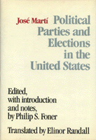

Cuban observations and analysis of U.S. elections and political parties
Cuban observations and analysis of U.S. elections and political parties


 Cuban observations and analysis of U.S. elections and political parties
Cuban observations and analysis of U.S. elections and political parties

|  |
Political Parties and Elections in the United StatesJose Marti, edited by Philip S. Foner, translated by Elinor Randallcloth EAN: 978-0-87722-604-8 (ISBN: 0-87722-604-0) |
"Anything that Philip Foner writes is worth reading for its clarity, scholarship, and honesty. His editing of the writings of Jose Marti is a fine accomplishment. Marti is a giant in the story of the Americas...."
—Carleton Beak
Cuban writer and patriot José Marti (1853-1895) published numerous articles on U.S. politics in the Latin American press. The ten articles in this volume chronicle Marti’s observations and analysis of U.S. elections and political parties.
Philip S. Foner is Professor Emeritus of History, Lincoln University.
Elinor Randall is a noted translator of Spanish literature. Together they have published five volumes of Jose Marti’s writings in English.
Political Science and Public Policy
© 2015 Temple University. All Rights Reserved. This page: http://www.temple.edu/tempress/titles/643_reg.html.